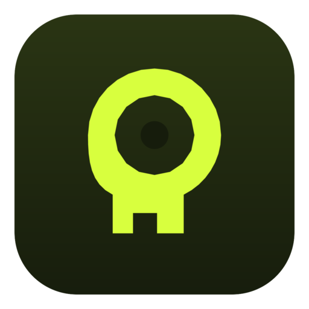

⌘1 · 文章を整える
口語のメモが、送れる文になる。
意味は変えず、誤字と回りくどい言い方だけを直す。社内メールの下書きを、その場で送れる形にするモード。

kupifamacOS GROK メニューバー
メールの下書きを、チャット画面へ持ち出さなくていい。
⌥ Space でパネルを開き、⌘⏎ で投げる。⌘⇧C でコピーすれば、書いていた文へ戻る。
Grok へ直接つながる。API キーは自分のものを、キーチェーンへ。
明日の打ち合わせ、少し遅れそうです。先に資料だけ共有しておきます。
テキストの貼り付け、または HTML / Markdown のドロップ
明日の打ち合わせ、少し遅れる予定です。先に資料だけ共有します。
01 — FLOW
書いているアプリはそのまま。手前にパネルだけが開く。
整えて、コピーして、閉じる。チャットの履歴をさかのぼる往復もない。
1
⌥ Space を押す。ほかのアプリで ⌘C を続けて2回でも開く。選択していた文は、入力欄に入った状態で待っている。
2
整える / 返事 / 翻訳 / 音声から選んで、⌘⏎。HTML や Markdown のファイルをドロップしても読み込める。
3
⌘⇧C で先頭の結果をコピー。パネルを閉じれば、書いていたメールに戻る。
02 — DOES
前置きも解説も返さない。そのまま貼れる本文だけが返ってくる。
⌘1 · 文章を整える
意味は変えず、誤字と回りくどい言い方だけを直す。社内メールの下書きを、その場で送れる形にするモード。
⌘2 · 返事作成
届いた原文と、返したい要点の走り書きを一緒に入れる。相手の質問を取りこぼさない返信になる。
⌘3 · 翻訳
結果カードで 日 ⇄ EN を切り替える。まだ無い言語は、その場で生成する。設定で両方を先に作っておけば、切り替えを待たない。
⌘4 · 音声で読む
そのまま読む、ラジオ風、要約版の3通り。HTML や Markdown をドロップした記事も、その場で耳から追える。声は Eve / Ara / Rex / Sal / Leo。
03 — HANDS
Dock には並ばない。必要なときだけ、Spotlight のようにパネルが開く。
ほかのアプリで ⌘C を2回。コピーした文を入れた状態で開く。
下書きのファイルや記事を入力欄へ落とすと、本文だけを取り出して読み込む。
⌘0 で開閉する。前に整えた指示と結果は、クリックで戻せる。
04 — KEYS
xAI のコンソールで発行して、設定に保存する。kupifa がキーを預かることはない。通信は、あなたの Mac から Grok の API へ直接つながる。
キーはキーチェーンの中。
履歴もこの Mac の中。
api.x.ai へ直接 · チャットと音声
中継しない。入力した文もキーも、運営側には届かない。
05 — START
1
xAI のコンソールで発行する。kupifa へ送信する画面はない。
2
メニューバーのマークから設定を開く。キーは macOS のキーチェーンに保存される。
3
⌥ Space でパネルを開く。整える、返事、翻訳、音声。整った文をコピーして戻る。
macOS 15 以降 · メニューバー常駐 · アクセシビリティの許可が必要